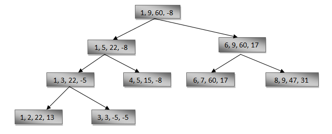

Divide and Conquer Approach:
In this approach, the array is divided into two halves.
Then using recursive approach maximum and minimum numbers in each halves are found.
Later, return the maximum of two maxima of each half and the minimum of two minima of each half.

Algorithm for maximum and minimum using divide-and-conquer.
1. MaxMin(i, j, max, min)
2.{
3. if (i=j) then max := min := a[i];
4. else if (i=j-1) then
5. {
6. if (a[i] < a[j])
7. then max = a[j];
8. min = a[i];
9. else
10. max = a[i];
11. min = a[j];
12. }
13. else
14. {
15. mid := ( i + j )/2;
16. MaxMin( i, mid, max, min );
17. MaxMin( mid+1, j, max1, min1 );
18. if (max < max1) then max := max1;
19. if (min > min1) then min := min1;
20. }
21. }
Complexity: